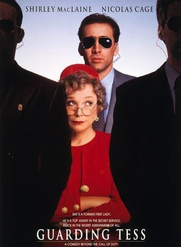

Guarding Tess

A man trained for a life of excitement and danger is given a new and unexpected challenge -- minding a grouchy old woman -- in this comedy. Doug Chesnic (Nicolas Cage) is a Secret Service agent who takes great pride in his job, performing his duties with the utmost professionalism and always minding the details. However, his assignment for the last three years has been a severe test of his patience; Tess Carlisle (Shirley MacLaine) is the widow of a former U.S. president who is well-known for her diplomatic and philanthropic work, and Doug has been in charge of her security force. But Tess tends to regard Doug less as a security officer and more as a domestic servant, like her chauffeur Earl (Austin Pendleton) or her nurse Frederick (Richard Griffiths). While Doug regards it as beneath his professional dignity to perform little chores around the house or bring Tess her breakfast in bed, she orders him to do so, and he's in no position to say, "no." Sometimes, Tess even refuses to obey Doug's security instructions, and should he argue his point too strongly, Tess will contact her close friend, the President of the United States, and ask him to give Doug a severe dressing down. So when Doug's three year hitch with Tess comes to an end, he asks to be given a more exciting and challenging assignment. However, Tess has other ideas; she's decided that she likes working with Doug, and she demands that his assignment be made permanent.
Review:
http://movies.nytimes.com/movie/review?res=990DEEDC153DF932A25750C0A962958260